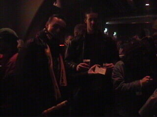

|
Roda JC - Ajax (1-1) 8 november 2002 |
De GSF-delegatie in Z16.
Het moet niet gekker worden...
De west-siders metselen de goal dicht met massa's
werplinten.
Omdat veel Ajaxsupporters niet op tijd in het
stadion arriveerden werd de aftrap een kwartier
opgeschort.
Witschge legt arbiter Braamhaar uit dat.....
...de gele kaart naar Brouwers moet.
Vanavond hingen er twee opmerkelijke vlaggen
in het stadion: een Israëlische in het gastenvak
en een Palestijnse op west ;-)
In het rommelige doch zeer amusante duel kreeg
het publiek zeer veel kansen voorgeschoteld.
Hier een redding op de lijn van Trabelsi.
Sonkaya staat geheel los van schwalbenheini
Van Damme.
Van Damme besluit zich te laten vallen en smeekt
de scheidsrechter om een gele kaart.
Met een begroting van € 60.000.000 mag je toch
betere shirtjes verwachten...
Kujovic verricht diverse knappe reddingen!
Een voorzet van Filipovic wordt door Didulica
weggestompt...
...waarna Sonko 1-0 scoort (62').
10 minuten later schiet Van der Vaart vanuit de
draai.
Het is de gelijkmaker (72').
De traditionele fakkel gaat van hand tot hand.
De wedstrijd eindigt 1-1. De nieuwe Sonko-vaan
wordt getoond door Kim en Rick.

Let even niet op Iceman. De gast links moet je
hebben. Hij heet Lieve, maar wat houdt hij in
zijn hand?
Een entreekaartje van Charlton Athletic tegen
Sunderland (1-1), afgelopen week!
Greets to all the Addicks!
© Koempels
Pleasure Dome